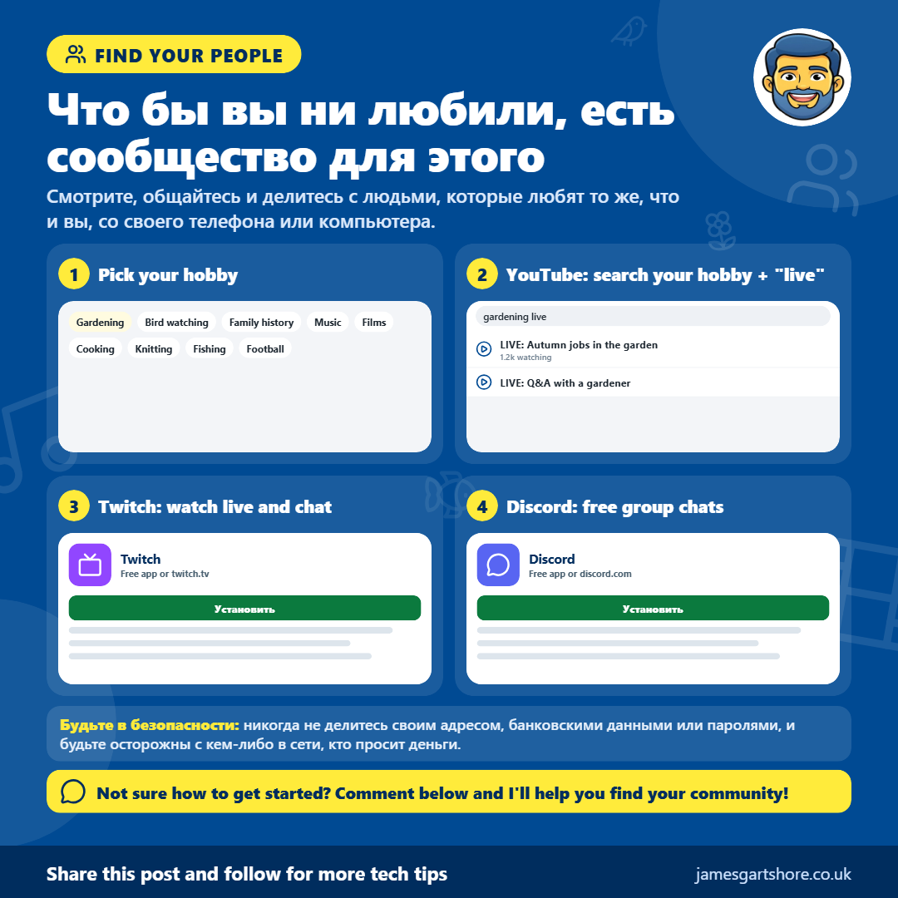

Online Communities
От Джеймса Гертшора · · Подключение к сети и связь
Всем привет, я хотел поделиться кое-чем, о чем многие не подозревают.
Что бы вы ни любили, будь то садоводство, наблюдение за птицами, семейная история, музыка, фильмы, кулинария, вязание, рыбалка или футбол, почти наверняка есть онлайн-сообщество людей, которые любят то же самое. Это отличный способ научиться чему-то новому, поболтать и почувствовать себя частью чего-то, особенно если вы живете одни или не можете выйти так часто, как вам хотелось бы.
Twitch (twitch.tv) — это веб-сайт и приложение, где люди вещают в прямом эфире, и все зрители могут общаться в чате рядом с видео. Это не только игры. Там есть прямые трансляции камер кормушек для птиц, люди, занимающиеся садоводством, готовящие еду, рисующие и многое другое. YouTube работает аналогичным образом. Помимо обычных видео, многие люди делают прямые трансляции с чатом рядом. Просто поищите свое хобби с добавлением слова "live", например, "наблюдение за птицами live".
Discord — это бесплатное приложение для групповых чатов, называемых серверами. Каждый сервер похож на клуб по определенному интересу, где участники размещают сообщения и фотографии, а также могут присоединяться к голосовым чатам для общения. У многих стримеров и ютуберов есть свой собственный сервер Discord, и вы обычно найдете ссылку для приглашения под их видео или стримами.
Все три сервиса бесплатны. Вам нужно будет создать учетную запись, если вы хотите общаться, но вы можете просто смотреть столько, сколько хотите, чтобы сначала разобраться. Никто не против тех, кто просто смотрит, и многие люди так и делают.
Как и с любым онлайн-вещанием, будьте в безопасности. Никогда не сообщайте свой адрес, банковские данные или пароли, и будьте осторожны с кем-либо, кто переводит разговор в личные сообщения, а затем начинает просить деньги или подарочные карты, как бы дружелюбно это ни казалось.
Если вам нужна помощь с началом или поиском сообщества по вашему хобби, просто напишите мне, и я сделаю все возможное, чтобы помочь.
Надеюсь, это поможет, и не стесняйтесь передавать это всем, кому это может быть полезно.